1 — Organisation and introduction
Lexicology and Lexicography
Outline
- Organisation: course structure, requirements, and materials
- Course preview: overview of topics and methods
- Introduction: what is lexicology?
Organisation
Course materials
Course website: https://wuqui.github.io/Lex252/
Registration
Any open issues?
Module requirements, exam registration, etc.
Course description
- This course provides an in-depth exploration of English lexicology and lexicography,
- examining key areas including word-formation processes, semantic analysis of word senses, and patterns of lexical innovation, variation and change.
- Grounded in empirical language data from dictionaries and corpora, students will develop analytical skills for studying lexis through
- dictionaries like the Oxford English Dictionary (OED) and Wiktionary,
- and corpora such as BNC 2014 Spoken and COCA on the corpus platforms Sketch Engine and english-corpora.org.
- The programme emphasises practical experience in frequency analysis, collocation analysis, and Word Sketches through collaborative group projects, enabling students to use authentic data and empirical methods for lexicological research projects.
Schedule
| Date | Topic | |
|---|---|---|
| 1 | 21 Oct. | Organisation and introduction |
| 2 | 28 Oct. | Words, dictionaries, and the lexicon |
| 3 | 4 Nov. | Morphology and word-formation |
| 4 | 11 Nov. | Dictionaries: fundamentals, examples, use cases |
| 5 | 18 Nov. | Using dictionaries and analysing data |
| 6 | 25 Nov. | Corpora: theories, methods, and applications |
| 7 | 9 Dec. | Semantics: studying meanings and functions of words |
| 8 | 16 Dec. | Studying lexis empirically |
| 9 | 13 Jan. | Lexical innovation: new words and meanings |
| 10 | 20 Jan. | Language change: historical and recent changes in the English lexicon |
| 11 | 27 Jan. | Lexical variation: text types & speakers and communities |
| 12 | 3 Feb. | Review & discussion |
Literature
Key textbooks:
Bauer, Laurie. 2022. An Introduction to English Lexicology. Edinburgh University Press.
Lipka, Leonhard. 2002. English Lexicology: Lexical Structure, Word Semantics and Word-Formation. Tübingen: Narr.
Schmid, Hans-Jörg. 2016. English Morphology and Word-Formation - an Introduction. 2nd ed. Berlin: Erich Schmidt Verlag.
Requirements
- Active participation and preparation
- Weekly readings and short exercises
- Term paper; rule of thumb:
- 3 ECTS: short paper (≈ 3–5 pages)
- 6 ECTS: long paper (≈ 10–12 pages)
Please check your Studien-/Prüfungsordnung for the exact specification.
Special case: Modulprüfung → see next slide.
Modulprüfung
Wichtige Information nur (!) für Studierende im BA Anglistik (PStO 2019, Studienbeginn WiSe 2019/20 oder später), die diese Lehrveranstaltung als Modul WP 1.2 belegt haben:
- Modul WP 1.2 ist nur ein Teil des Gesamtmoduls WP 1, das mit einer Gesamt-Modulprüfung (gemeinsame Prüfung über beide Modulteile hinweg) endet, die erfordert, dass beide Modulteile besucht wurden.
- Bitte überprüfen Sie deswegen anhand der Übersicht unten und Ihres Stundenplans noch einmal, ob Sie in diesem Semester auch tatsächlich eine Veranstaltung im anderen Modulteil WP 1.1 belegt haben und für diese auch zugelassen wurden. Sollte dies nicht der Fall sein, wenden Sie sich bitte schnellstmöglich an die Studiengangskoordination (studienberatung@anglistik.uni-muenchen.de).
- Die Anmeldung zur Gesamt-Modulprüfung erfolgt im Prüfungsanmeldezeitraum (7.1. – 23.1.2026). Bitte melden Sie sich dann bei dem/der Dozent*in an, bei dem/der Sie die Veranstaltung für das Modul WP 1.1 besuchen.
- Das gleiche gilt für folgende Module in anderen Studiengängen: TUM MA (neu), Modul WP 11.2 (> WP 11.1 muss im gleichen Semester besucht werden)
All of The assessment for WP 1 takes place in WP 1.1.
There is no assessment in this course if you take it as WP 1.2.
WP 1 courses offered this semester
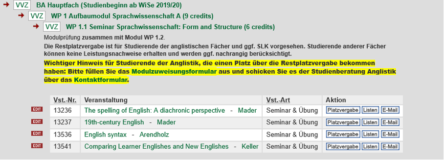
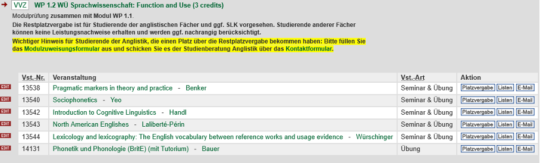
Course preview
Words, dictionaries, and the lexicon
- What is a word? (Bauer 2022)
- What is the lexicon? (Lipka 1992)
- Is there structure in the lexicon or is it just a “bag of words”?

Morphology and word-formation
- Cover basics of morphology and word-formation based on the framework by Schmid (2016)
- Apply theoretical foundations to analyse word-formation processes.
- What are differences in behavioural profiles and productivity of morphemic and non-morphemic word-formation processes?
- How can we study morphology and word-formation based on empirical data?
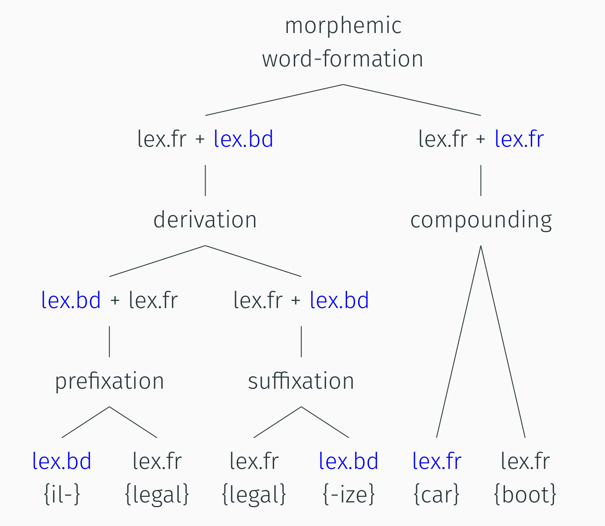
Dictionaries: fundamentals, examples, use cases
- What is the difference between dictionaries and the lexicon?
- What is the mental lexicon?
- What kinds of dictionaries are there?

Using dictionaries and analysing data
- How can we use dictionaries to study the lexicon?
- How do we access data from dictionaries?
- How do we store and process data?
- Hands-on: Practice working with lexicological data.
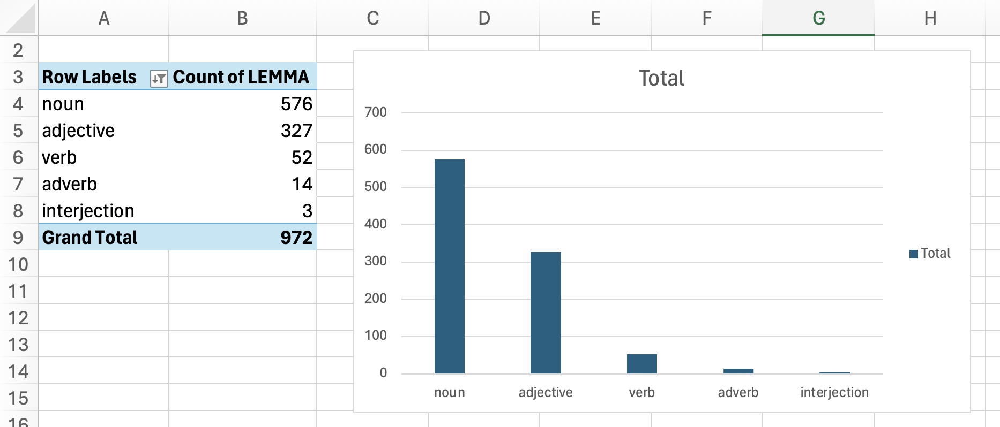
Corpora: theories, methods, applications
- Introduce corpus linguistics as a usage-based method and contrast it with introspection.
- Tour Sketch Engine (BNC 2014 Spoken) to collect frequency and collocation methods.
- Learn how to search corpora, do frequency analysis and collocation analysis.
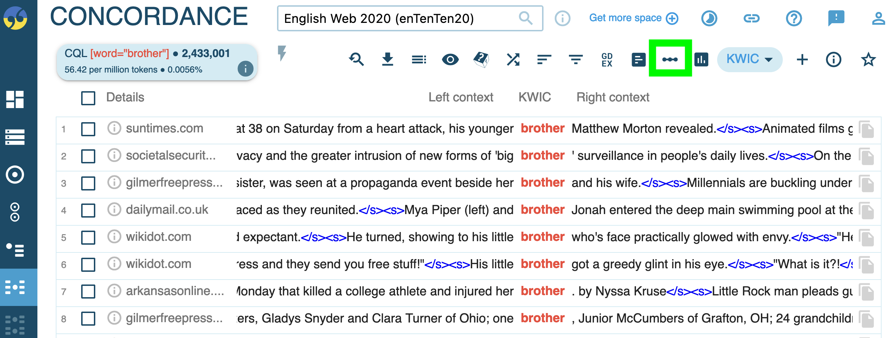
Semantics: meanings and functions
- How can we study meaning in the lexicon?
- How can we use collocation analysis and Word Sketches based on empirical corpus data in Sketch Engine?
- How do we interpret the results?
- Hands-on: Case study on the meaning of source and full forms of clippings (e.g. brother vs bro)
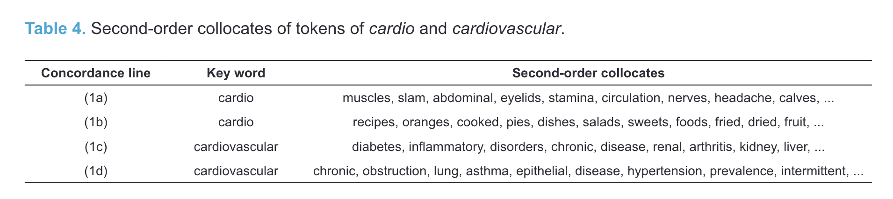
Studying lexis empirically
- More practice on using dictionaries and corpora to study the lexicon.
- How can we obtain data?
- How can we store and organise these data effectively?
- How can we analyse these data in Excel?
- How can we create visualisations of our results?
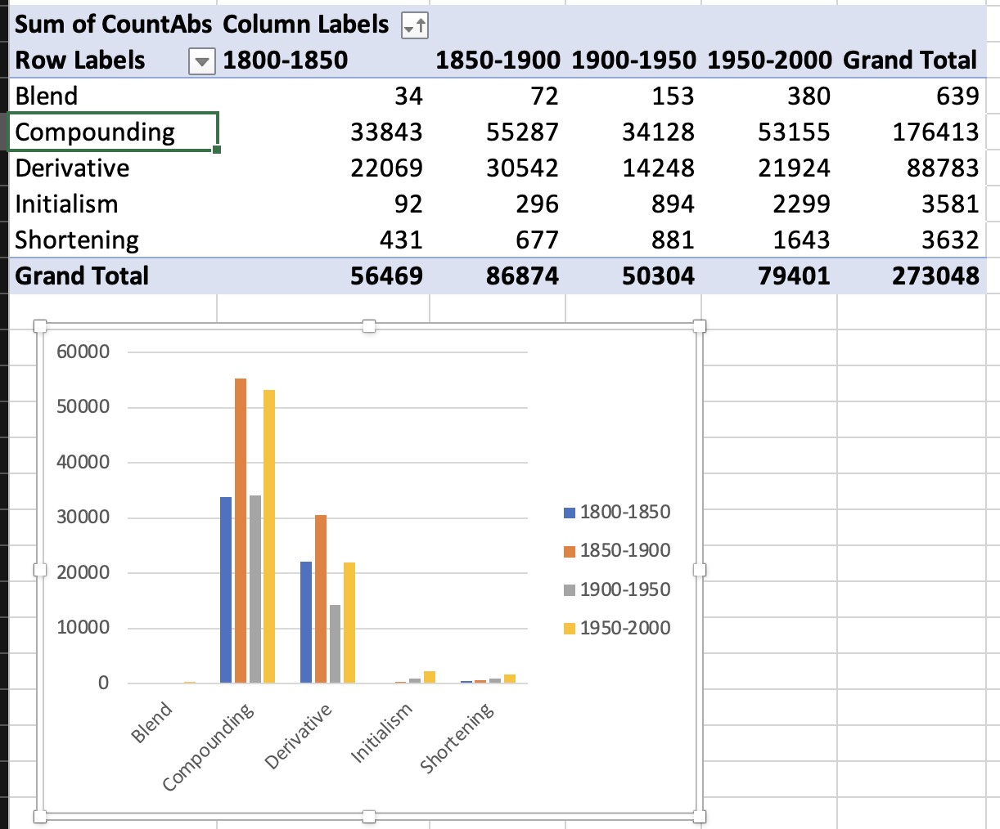
Lexical innovation: new words and meanings
- New products and practices enter the linguistic system on the level of lexis.
- Why do speakers coin new words?
- Which new words are being coined and spread successfully?
- Are there patterns among recent neologisms? (e.g. word-formation processes, semantic domains)
- Which trajectories of spread do we observe?

Lexical change: historical and recent shifts
- How has the English lexicon changed over time?
- Which kinds of recent changes do we observe?
- How can we use diachronic data to study language change in the lexicon? (dictionaries, corpora)
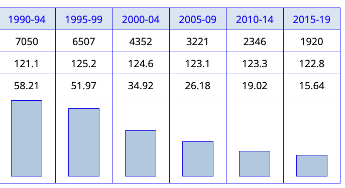
Lexical variation: speakers and communities
- How do speakers use language in different contexts and communities?
- Can we observe individual variation between speakers?
- How can we study this based on empirical data from dictionaries and corpora?

Lexical variation: text types, genres, registers
- How can we model variation in language use between text types, registers, genres, and medium?
- How do speakers use language in different contexts? (e.g. formal vs informal)
- Does variation in use between text types correlate with language change?
- Shift focus to diaphasic variation and register-sensitive vocabulary.
- Case study: language change in the system of modal verbs (Hilpert and Mair 2015)
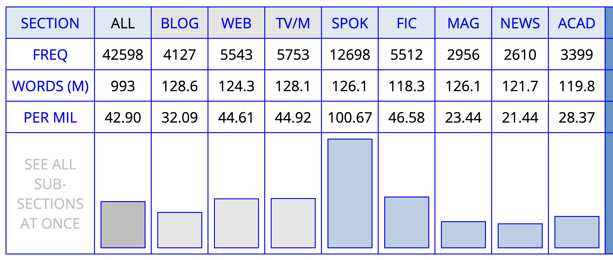
Introduction to Lexicology and Lexicography
What is a word?
How many words?
Paul was drinking beer in his favourite bar. He enjoyed having a drink every now and then. He thought he did not drink much, but his wife thought that he drank.
→ 31 running words/tokens
Types vs tokens
| type | token | |
|---|---|---|
| 1 | DRINK \(^v\) | drinking |
| drink | ||
| drunk | ||
| 2 | DRINK \(^n\) | drink |
– tokens: he\(^1\), he\(^2\) …
– word forms: drinking, drank are word‑forms of DRINK\(^v\)
– types/lexemes: e.g. DRINK\(^v\)
What is the lexicon?
Does the lexicon have structure?
Lipka, Leonhard. 1992. An Outline of English Lexicology. Forschung Und Studium Anglistik. Tübingen: Niemeyer.
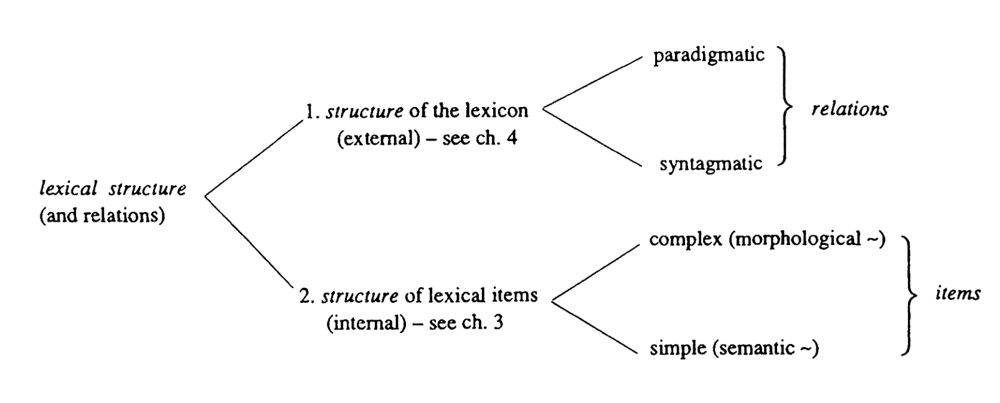
- External structure of the lexicon (relations):
- paradigmatic: substitution in the same slot (synonymy, antonymy, hyponymy), e.g., big ↔︎ large; car ↔︎ vehicle.
- syntagmatic: co-occurrence patterns/collocations and valency, e.g., strong tea; take a photo; commit a crime.
- Internal structure of lexical items (items):
- complex (morphological): built from morphemes, e.g., un‑happy‑ness, blackbird, rethink.
- simple (semantic): monomorphemic with sense structure, e.g., bank (money vs river), semantic features like [+ANIMATE] for dog.
Fundamental types of lexical structures
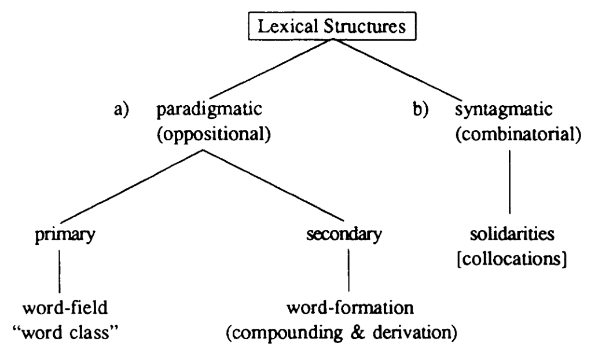
- Paradigmatic: red – blue – green; car ↔︎ vehicle; alive ↔︎ dead.
- Word‑formation families: happy → unhappy → unhappiness; black + bird → blackbird.
- Syntagmatic: heavy rain, strong tea, make a decision, commit a crime.
- Selectional preferences: drink tea/coffee, pay attention, raise awareness.
Quote
“What is most important, however, is that in lexicology the stock of words or lexical items is not simply regarded as a list of isolated elements. Lexicologists try to find out generalisations and regularities and especially consider relations between elements. Lexicology is therefore concerned with structures, not with a mere agglomeration of words.” (Lipka 1992: 1)
The role of the Lexicology in language
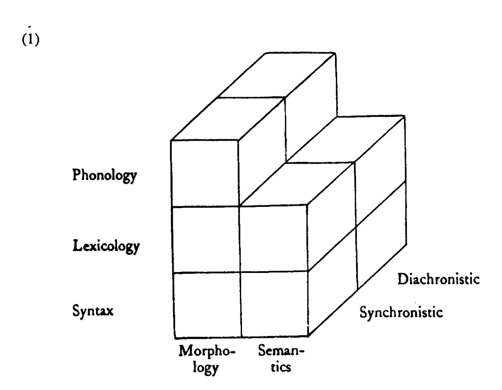
- morphology × synchronic: productivity of -ness (e.g., kindness, happiness); compounding patterns (e.g., blackbird, laptop stand)
- morphology × diachronic: rise/fall of -th (e.g., warmth, width); reanalysis in compounds (e.g., hamburger → burger, cheeseburger)
- semantics × synchronic: sense network of charge (money: service charge; legal: press charges; electricity: charge a battery)
- semantics × diachronic: change in gay (cheerful → sexual identity); mouse (animal → device)
For next week
Read: Bauer (2022), ch. 1.
You can download the PDF excerpt here.